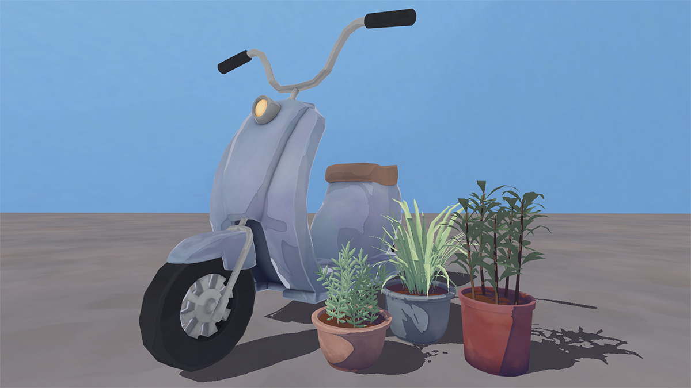
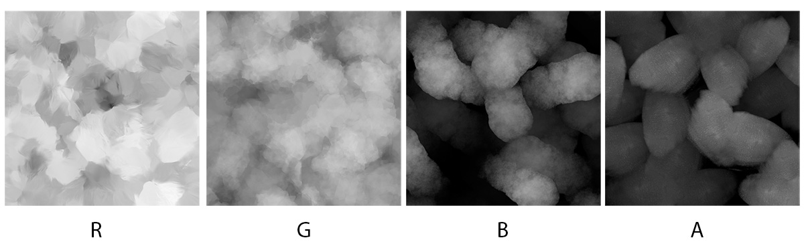

Watercolor Shader

This shader is used in my project Jiufen Street, mimicking a watercolor effect with a two-tone and subtly distorted shadow. The creation of the texture also greatly affects the watercolor look of the scene. I tried to stick to colors that are commonly found in watercolor palettes and keeping the saturation of the colors on the lower side.

The shadows are generated with an N.L calculation, and subtly distorted with a normal map. This softens the shape of the shadow, giving a more organic and watery feel. The N.L calculation is then run through a smoothstep and a step, where the region of the smoothstepped version goes a bit farther than the stepped region. They are then lerped together so the smoothstep edge region is darker than the rest of the shadow, mimicking when watercolor pools and on the edge of a brushstroke, creating a darker outline.
The whole shadow is then multiplied with a shadow color, resulting in the final two-toned watercolor shadow. The shadow is then layered on top of the base texture. This two-tone shadow and base texture is the shader used for almost all of the assets in the Jiufen Street scene, and extended on for a couple unique shaders.
For the moped, I wanted to add a subtle fresnel since it is a metal, shiny object. A similar calculation as the shadows is used for the fresnel, distorting it with noise and combining a smoothstep and stepped fresnel. The areas with fresnel is then masked in the alpha channel of the texture.
The plants use the same lighting model, just with an alpha-cutout shader. Using the alpha cutout render queue allows the geometry to cast shadows, and results in some more nice two-tone watercolor shadows.

This triplanar watercolor shader mimics a watercolor smart substance material I made for texturing in Substance Painter. The Substance Material layers a variety of different colored brush stroke-like textures, giving a nice depth to areas that would otherwise be solid colored. The same watercolor lighting model is used in this shader again as well.
I exported the brushstroke textures from Substance Designer and combined them in the RGBA channels of a single image to use in-engine. Each channel is then separated and projected using triplanar projection. The color, opacity, and scale of each texture can be controlled in the material settings. This material is used for large areas such as the ground or walls.

See the full scene here!
IMAGE OF JIUFEN STREET